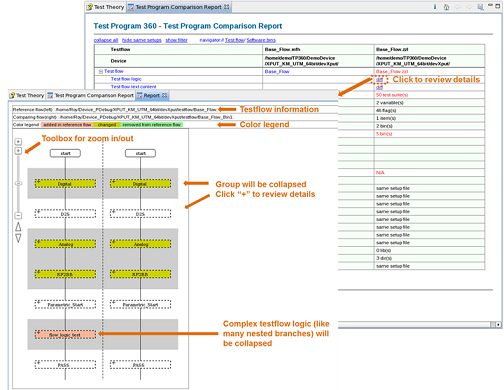
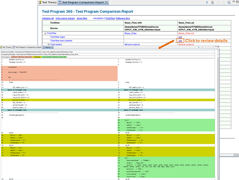
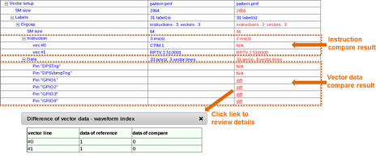
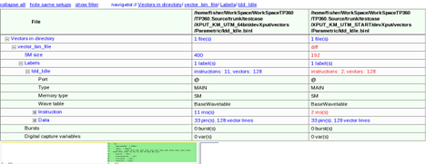
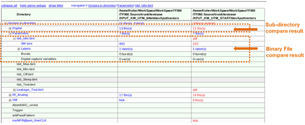
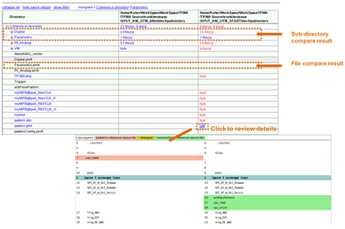
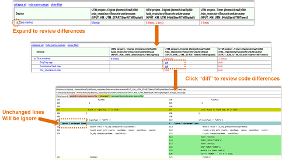

Comparison reports of Test Program Comparator
In this topic, you get an overview of the comparison reports about comparing testflows, vector files, directories and test methods.
Testflows comparison report
The report provides testflow comparisons for testflow logic, testflow text content, pins, levels, timings, vectors, analog setups, test tables, test methods used with testflows, the used test method libraries, and the used technologies and licenses.
The following screenshot displays the report for comparisons of testflow logic. It is presented as a diagram containing comparisons of suites order, bypass, set pass, group bypass, suite branch, single bin and multiple bin, loop (such as repeat, while, if/else branch), spec change special suite, prints and print to data log.

The following screenshot illustrates the report for the comparisons of testflow text contents.
The testflow checksum can be changed as a result of blank lines or blank space characters. The Test Program Comparator compares the contents of testflows and highlight the differences.

Vectors comparison report
Only the pattern master-based vectors are compared. This includes:
- Basic setups of vectors
- Instructions of vectors
- Setups of DC scales
- Binary data of pins (optional, the comparison time is long)
If the sub-files have the same relative paths, the same file names, or the same file contents, the Test Program Comparator does not check them and shows the number of them in the report.

Binary vector files comparison report
This comparison compares:
- Basic setups of vectors
- Instructions of vectors
- Setups of DC scales
- Binary data of pins (optional - the comparison time is long)

Vector directories comparison report
Only binary vector files and the sub-directories of the selected directories are compared. The file contents are not compared.

Directories comparison report
All files and sub-directories of the selected directories are compared, but the file contents are not compared except for ASII files.

Test methods comparison report
Codes of selected UTM projects are compared.

Functional changes
- Introduced in SmarTest 7.3.2